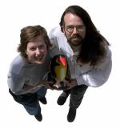

|
|
|
|
|
|
|
|
|
|
acknowledgements accolades |
GS2001 Online coverage
The people who made it happen
The usual suspects:|  |
|
The WebTeam: Leanne, Buddy, Keith.
|
{kind=link}
Leanne wrote through all the hours of the day providing the fantastic written coverage of synod. She also supervised operations (including the web broadcast) at synod itself. She deserves a medal for holding it all down while Keith was on holiday.
Keith did the lovely site design and graphics, and coded up a storm in the background. He banged his head against the web broadcast system (and everyone involved) for a week and urged Leanne not to panic. Eventually, it worked.
Buddy sat on his duff and stared at us, chuckling silently to himself.
And thanks to the following:
The Diocese of Montreal for providing the funding necessary for the web broadcasting. Hooray! Thank you.
Robert Martin for producing the excellent Daily Reports.
Tod Maffin for providing assistance in figuring out what we needed and how to do the web broadcasting.
Alan Perry for moderating the gs2001 discussion list.
Glenn Tam our tireless assistant for making himself available for extra work during synod and spending many hours doing battle with the reports and resolutions so that they could be available online.
Mariana Bell for getting us the computer for and supporting the web broadcast at synod.
Our boss, Sam Carriere, for his editing prowess.
The GS2001 staff, Margaret Shawyer and Dianne Izzard, for providing the convening circular material for coding and not freaking out when we called.
Our former director, Doug Tindal, for getting us into this mess and then heading for the hills. ;-)
The coffee gang for letting us vent (or hyperventilate, depending on the day).